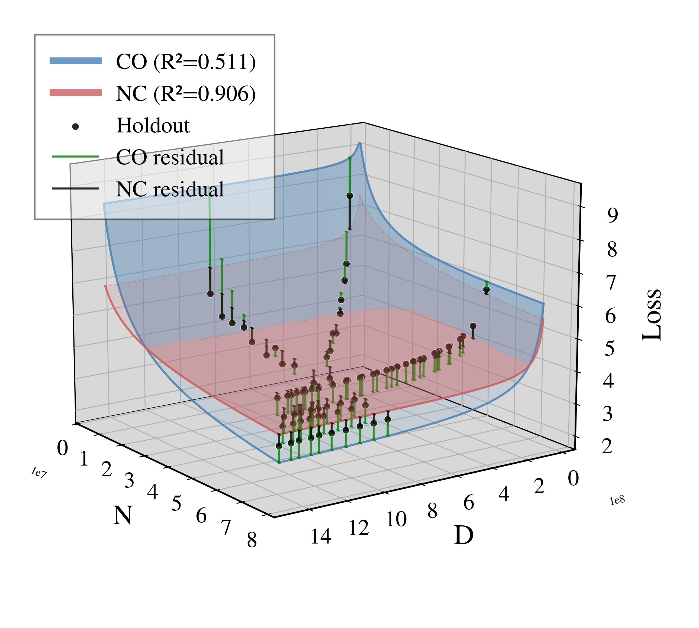
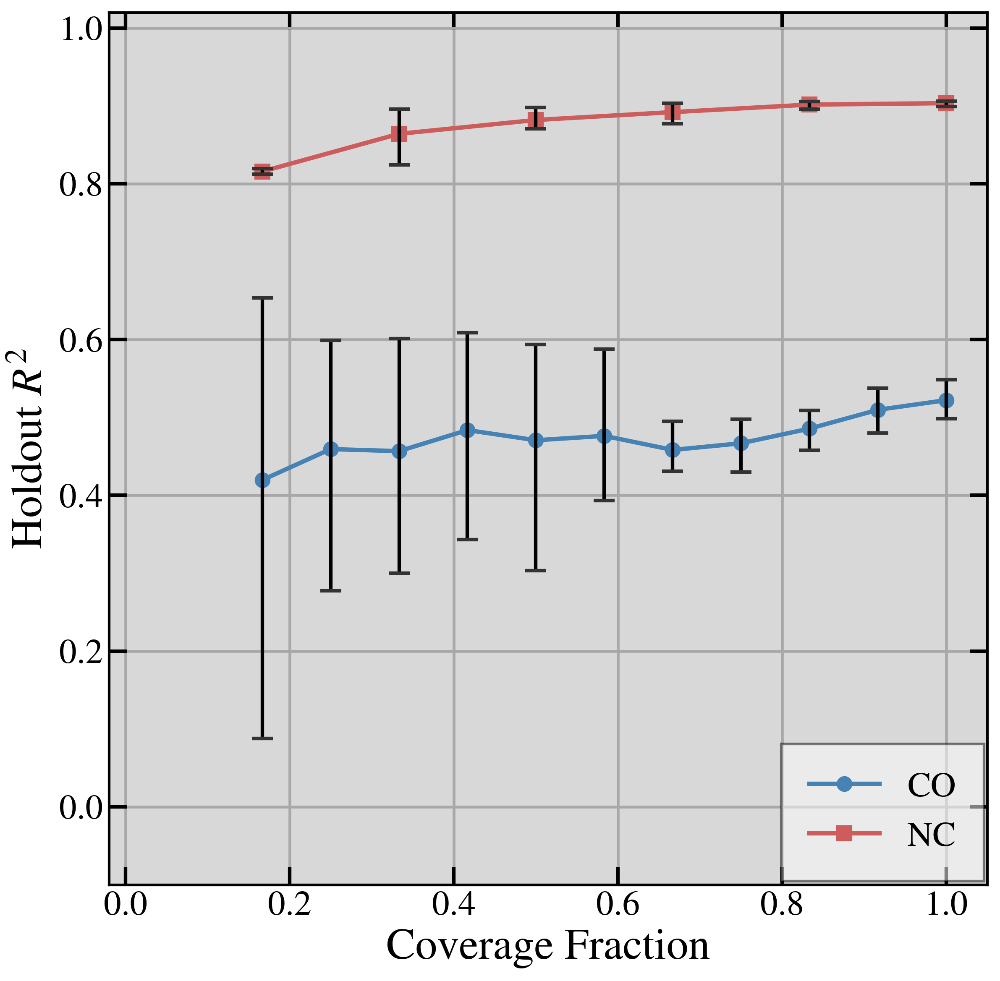
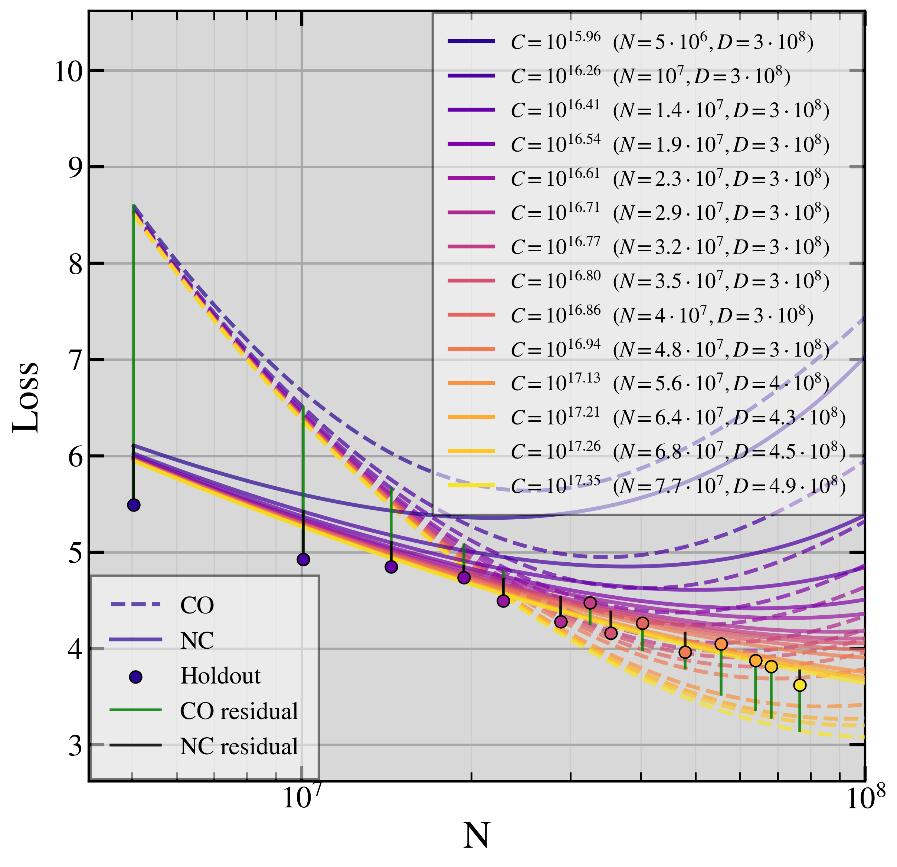

Tokens-per-Parameter Coverage Is Critical for Robust LLM Scaling Law Extrapolation
Joshua Shay Kricheli*,Alexander Lawrence Reid*,Soumajyoti Sarkar†,Venkata Gandikota,Paulo Shakarian
Syracuse University (Leibniz Lab, Institute for Artificial Intelligence) · Amazon AGI Foundations† *Equal contribution. †This work does not relate to the author's position at Amazon.
Many scaling-law studies train at one or a few fixed tokens-per-parameter ratios $k = D/N$ (a collinear design).
On such rays the model and data terms move together, so the fit cannot tell them apart: the scale pair is ill-conditioned, and extrapolation off the ray fails.
A closed-form threshold on the spread of the ratios, checked before training, says when a design is well conditioned.
Designs that spread runs over TPP (non-collinear) win 97.3% of extrapolation comparisons.
Abstract
Neural scaling laws approximate a language model's loss as a power-law function of parameter count $N$ and token count $D$. Following Chinchilla-style compute-optimal training, many studies fit scaling laws from runs at one or a few fixed tokens-per-parameter (TPP) ratios $k$, with $D = kN$. We show that this collinear design, combined with the empirically common near-equality of the exponents governing $N$ and $D$, induces an inherent ill-conditioning in the Gauss-Newton least-squares problem: the condition number of the design grows as the inverse square of the gap between the $N$- and $D$-exponents. The scale coefficients become practically unidentifiable, with confidence intervals inflating by orders of magnitude, yielding a "sloppy" model whose extrapolations degrade sharply off the training ray. We prove this for four scaling-law formalisms and derive a closed-form TPP-diversity threshold that characterizes well-conditioned estimation to leading order. Empirically, in controlled experiments with 5M-77M-parameter models, non-collinear designs outperform collinear ones on held-out data with a 97.3% win rate across four laws and five corpora, and 98.7% in bfloat16. We further show the degeneracy is rooted in Jacobian geometry and is not an artifact of the loss function: any smooth objective whose Gauss-Newton weights are bounded above and away from zero inherits the same ill-conditioning.
One ray cannot separate model and data
On a ray $D = kN$ the Chinchilla law becomes
$$L(N, kN) = A N^{-\alpha} + B k^{-\beta} N^{-\beta} + E,$$
so only the exponent gap $\varepsilon = |\alpha - \beta|$ separates $A$ from $B$. The scale pair's condition number grows as $\kappa_{A,B} = \Theta(\varepsilon^{-2})$, and the confidence interval on $A$ is $\Omega(\varepsilon^{-1})$ times the one on the identified combination $\psi = A + Bk^{-\alpha}$.
A threshold checkable before training
For a collinear design with ratios $k_1 < \cdots < k_K$, to leading order $\kappa_{A,B} \leq \kappa_{\mathrm{target}}$ whenever
and $\kappa_{A,B} \leq \kappa_{\mathrm{target}}$ exactly when $V_K \geq \tau_K/(1 + 1/\kappa_{\mathrm{target}})^2$. One ray never passes; two rays pass once their spread $k_2/k_1$ reaches $R_{\min}(k_1)$.
Results
Comparison (NC vs. CO)
NC wins
Full fan, FP32 (1,460 of 1,500)
97.3%
Full fan, BF16 (296 of 300)
98.7%
Budget-matched below the threshold, Chinchilla
68.5%
Budget-matched below the threshold, Droppo-Elibol
57.4%
Budget-matched below the threshold, Kaplan
80.6%

Fitted surface with holdout points.

Holdout $R^2$ against TPP coverage.

Induced isoFLOP curves.
Kaplan law on RedPajama, first epoch; CO in blue, NC in red.
Design recipe
Pick the lower ratio $k_1$ and read the minimum spread $R_{\min}(k_1)$ at $\kappa_{\mathrm{target}} = 100$.
Train on two ratios at the ends of that spread, runs split evenly, log-uniform in $N$.
Check the exact $\kappa_{A,B}$ of the planned $(N, D)$ before training.
BibTeX
@inproceedings{kricheli2026tpp,
title = {Tokens-per-Parameter Coverage Is Critical for Robust {LLM} Scaling Law Extrapolation},
author = {Kricheli, Joshua Shay and Reid, Alexander Lawrence and Sarkar, Soumajyoti and Gandikota, Venkata and Shakarian, Paulo},
booktitle = {Advances in Neural Information Processing Systems},
year = {2026},
note = {arXiv:2605.08541}
}